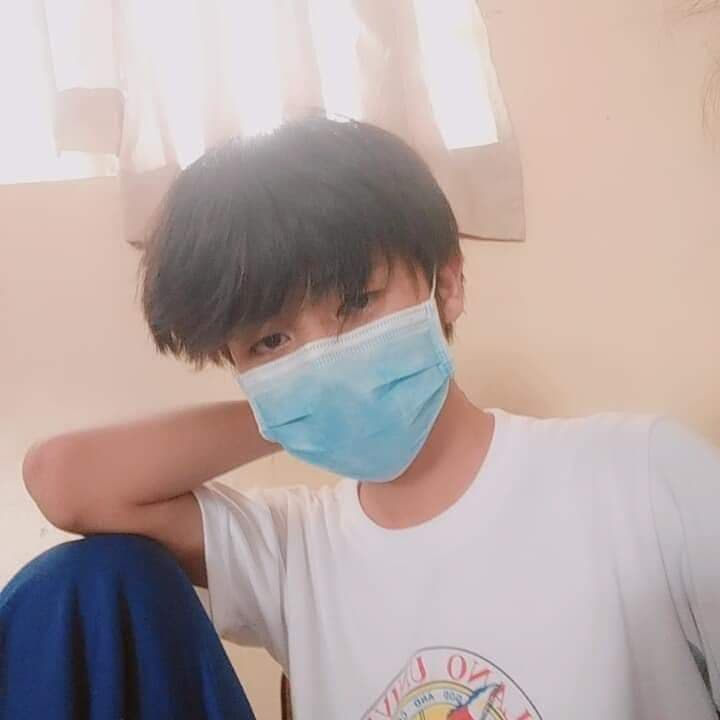
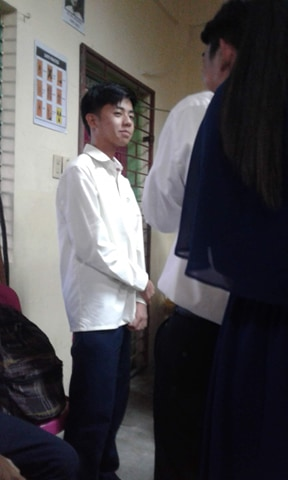
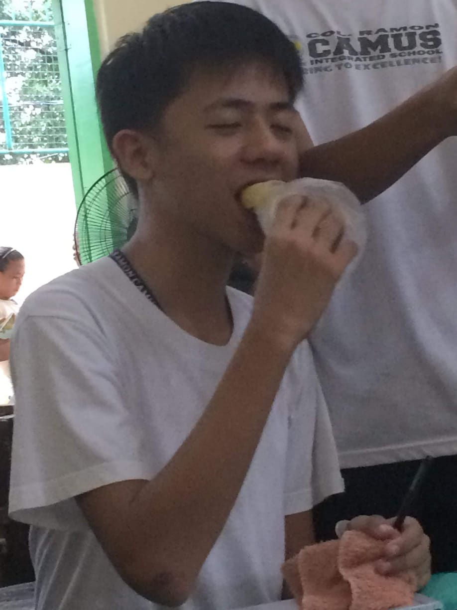

  
On my high school days I always go home early. I don't socialize with my classmates, I always want to leave school early to play computer games, near at our home. I always play Leauge of Legends with my friends and go somewhere to bet a game with other team. When i started going in grade 10 I always have 100 pesos each day, because we always win on the team we're competing with different sections or different grade. When I started at grade 11, I always wear a face mask, I am not confident of my face , because of the pimples and scars. When the pandemic starts I feel sab because our family is not financially stable and we doesn't have enought money to secure ourselves to be safe on pandemic. After the lockdown I go to my brothers house so that I will take care of my nephews.
The next part will be my college days,
Perez, Ivan